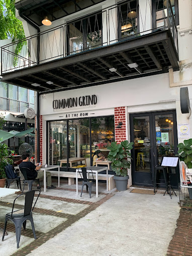

CafeSyu
Our Cafe sell Coffee, Pastry, and soft serve
Our Menu/Services
- Spanish Latte
- Double shot of espresso mixed with creamy steamy milk and 2 pumps of syrup. - RM 13.00
- Butter Croissant
- Flaky, multi-layered French pastry baked fresh daily with premium butter. - RM 8.50
- Matcha Soft Serve
- Smooth and creamy velvety soft serve ice cream made with premium Uji matcha. - RM 9.00
- Affogato Soft Serve
- A scoop of our signature vanilla soft serve drowned in a hot shot of espresso. - RM 11.50
How To Order
- First go to Website and click the Menus.
- Choose the menu you want to order.
- Checkout the orders
Facilities
- High-Speed Wi-Fi: Complimentary, fast internet access throughout the cafe for remote work and browsing.
- Power Outlets: Conveniently located charging stations at every table to keep your laptops and phones powered.
- Prayer Room (Surau): A clean, quiet, and dedicated space available for our Muslim guests to perform their prayers.
What Our Customers Say
"The best spot in town to get work done! Their Gula Melaka Latte is perfectly balanced, and the Matcha Soft Serve is incredibly smooth. Plus, having high-speed Wi-Fi and power plugs at every table makes it the perfect remote working cafe."
- Aisha R., Regular Customer
CafeSyu

Contact Us
Cafe Address:
No. 15, Ground Floor, Jalan Teluk Lipat,
20000 Kuala Terengganu,
Terengganu, Malaysia
Email:
CafeSyu@coffeepastrysoftserve.com
Find Us On:
Google Maps or
Instagram